Mi Ranchito
Centro Turístico
Ofrece una variedad de atracciones:
- Cancha de voleibol
- Cancha de futbol
- Piscina cabañas
- Zona de camping
- Gimnasio
310 257 7664 · 310 857 6190
EL DORADO


Entre naturaleza, agua y tranquilidad

Centro Turístico
Ofrece una variedad de atracciones:
310 257 7664 · 310 857 6190

Vista panorámica: disfruta de los paisajes de los Llanos Orientales.
Observación de aves: conoce y disfruta la diversidad de aves locales.
Gastronomía: saborea los platos tradicionales del Meta.

Homenaje a la construcción de paz de nuestro municipio.
Vereda San Pedro, a 6 km de la cabecera municipal, por la vía a la vereda Caño Leche